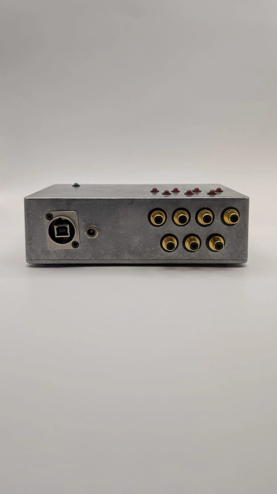
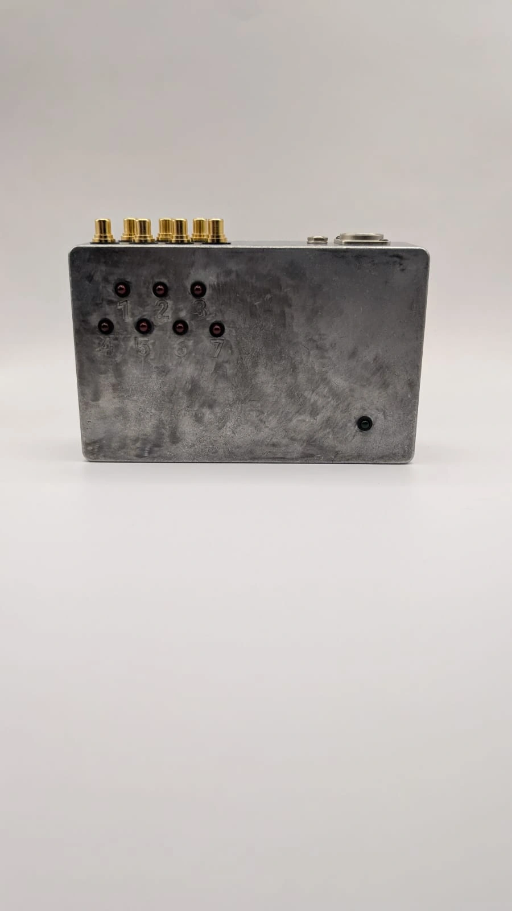
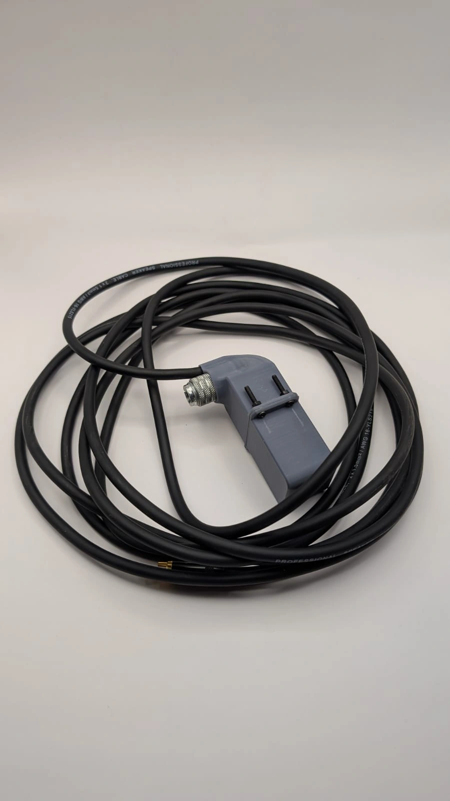

← Volver a proyectos
Máquina percutora MIDI
Modelado 3D · Fabricación · 2025Este proyecto, desarrollado en Piruetas, microempresa de arte electrónico, consistió en el modelado 3D, la composición y distribución de los componentes, y la fabricación de las carcasas para una máquina de percusión MIDI, montada en una caja Hammond. Fue una comisión para Sokio, destinada a la ópera Splitting Absence, presentada en New Latin Wave, Nueva York, y en el Centro Cultural Gabriela Mistral (GAM), Santiago.
Arrastra el modelo para girarlo y haz clic para pausarlo o reanudarlo.


